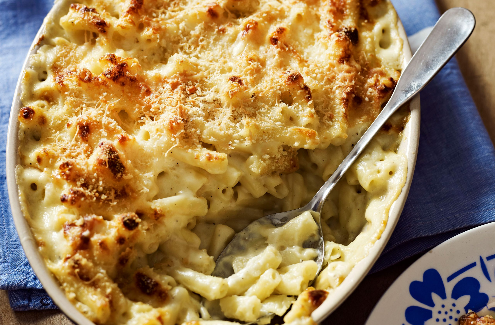

Simple Mac and Cheese
Ingredients
- 4 cups (1 liter) Milk
- 12oz (340g) Pasta (elbow macaroni)
- 7oz (200g) Cheddar cheese, shredded
- 1 teaspoon Salt
- 1/4 teaspoon Black pepper
- 1/4 teaspoon Paprika
Preparation
- In a large pot, bring milk to a boil.
- Reduce to medium-low heat, add macaroni and cook, stirring frequently, until the pasta is cooked, about 12 minutes.
- Remove from heat, add the cheese and stir until melted and incorporated.
- Serve and enjoy!
Follow the video
Video courtesy of The Cooking Foodie YouTube Channel.